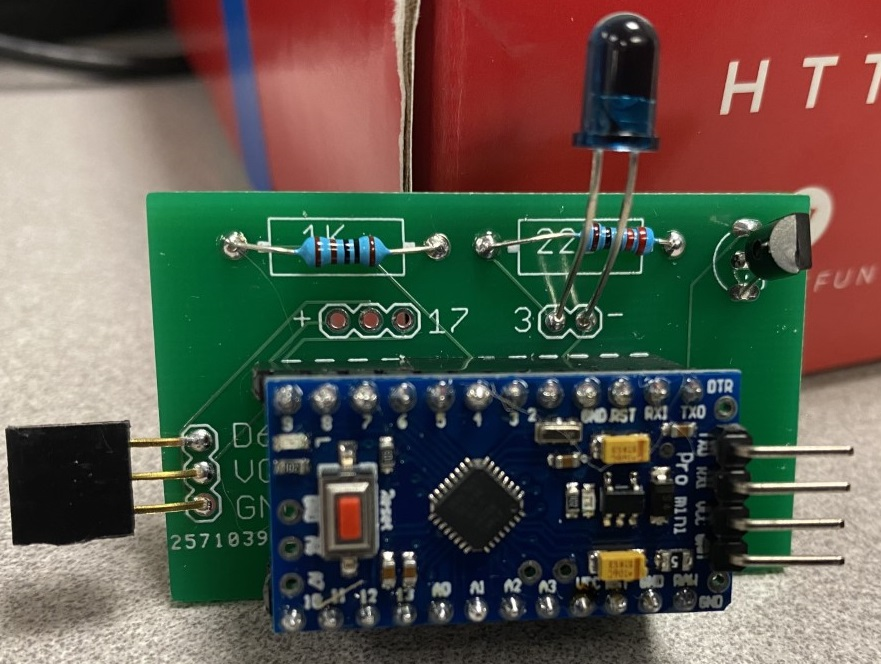

Infra-red transmit
An infra-red transmit is accomplished by using a printed-circuit board which looks like:

The connecting wire is similar to a servo 3-wire connector (gnd-vcc-data)
This is connected to a digital output on the micro-bit. When the output transitions to 1 (energized),
the infra-red component transmits its pulse